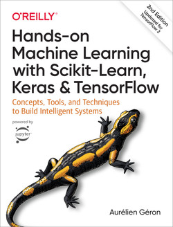

Machine Learning and Data Mining (Module I)
Introduction
DISI — University of Bologna
m.francia@unibo.it
Modules
Module I (ML&DM; DTM), 30h (Prof. Francia)
- Goal: Introduction to Machine Learning
Module II (ML&DM; DTM) = Module I (DCAI; CSE), 30h (Prof. Golfarelli)
- Goal: Data-Centric AI and the importance of data quality and understanding
Module II (DCAI; CSE), 30h (Prof. Francia)
- Goal: Laboratory and advanced aspects of Data-Centric AI
| Month Week | ML&DM Mod I DTM Francia |
DCAI Mod II DTM + CSE Golfarelli |
DCAI Mod II CSE Francia |
|---|---|---|---|
| Sep 3 | 10 hours | ||
| Sep 4 | 10 hours | ||
| Oct 1 | – | ||
| Oct 2 | 10 hours | ||
| Oct 3 | 7 hours | 3 hours | |
| Oct 4 | 7 hours | 3 hours | |
| Nov 1 | 7 hours | 3 hours | |
| Nov 2 | 7 hours | 3 hours | |
| Nov 3 | 2 hours | 3 hours | |
| Nov 4 | 5 hours | ||
| Dec 1 | 5 hours | ||
| Dec 2 | 5 hours | ||
| Dec 3 |
Context

Overview
Machine learning is more than running an algorithm
By the end of the course, you should be able to carry out the whole data mining process.
- Understand machine learning techniques for structured data
- Understand data quality and its impact on machine learning
- Develop judgment when applying ML techniques in real business contexts
- Apply the concepts through case studies and exercises


Exam: Book each oral exam when you are ready
The final grade is the result of an oral exam.
- There are no scheduled dates: book each exam when you are prepared.
- Mandatorily use the Booking application!
- Usually, two slots per week (which will be later defined)
- Either with me or Prof. Golfarelli (but you cannot choose :))
- Check your email in case of last minute updates before the exam
Exam: What happens on exam day
Each oral exam:
- Mandatorily takes place in person
- Lasts approximately 30 minutes
- Includes three questions on different topics from the whole program
- Begins with a slide-supported discussion of your assignment (max 10 minutes!)
According to University regulations:
- After an unsuccessful attempt, you must wait one month before trying again.
- You may decline an awarded grade only once.
Exam: The oral exam covers the whole course
Questions cover all theoretical and practical aspects of the course, including your assignment and labs.
- How can you check whether you are prepared?
- Open a slide at random and read its title.
- Can you explain the topic in a clear, self-contained presentation?
- Active, relevant participation during lectures and labs is considered in the final evaluation.
Exam: Assignment
You must do an assignment among two possible options:
- Option 1: Study of an algorithm among those in the literature (read, understand, summarize, test a paper)
- Option 2: Analysis of a dataset following the CRISP-DM methodology
Assignment cannot be done in group
Final Assignment: Option 1 (study and apply an advanced ML algorithm)
- Ask me for a list of possible papers to study
- Each proposed paper must have an available implementation.
- Wait for my approval
- Study the paper
- Apply the algorithm to a real dataset
Final Assignment: Option 2 (build a full data-driven solution)
Build an AI system…
- Find a problem of your interest
- Find a public dataset containing real data
- Define your analysis and modeling strategy
- Explain the insights obtained from your analysis
Before starting …
- Email me a project proposal of approximately 300 words:
- Describe the dataset
- Link to the public dataset
- Identify the main challenges
- The dataset must require some pre-processing
- Wait for my approval
- Register the group and project using the Google Form
- Develop the project in Google Colab
Final Assignment: You must understand and defend your code
You may use documentation, libraries, examples, and AI assistants, but you remain responsible for every part of your submission.
- Understand and explain the code
- Justify your technical and methodological choices
- Verify that the complete assignment runs without errors
If you cannot explain your work or submit work that is not your own, you will have to retake the exam.
Final Assignment: Deliverables
Once the project is completed:
- Write a four-page paper in LaTeX using Overleaf and the IEEE conference template
- Prepare a 10-minute presentation with no more than 10-12 slides (~1 per minute!)
- Ensure that the assignment runs in Google Colab without errors
- Upload the paper, code, and presentation to a GitHub repository
- Share the repository
Final Assignment: Paper structure
| Section | Length | |
|---|---|---|
| Introduction | ~0.5 page: context | |
| Main content | ~2 pages: discussion of your assignment following CRISP-DM methodology | |
| Results | ~1 page: results and insights | |
| Conclusions | ~0.5 page: summary and conclusion |
Teaching material
You will find all you need on Virtuale.
- Slides and Python notebooks to be opened on Google Colab
However, keeping up the pace with machine learning and data mining is hard
- There is a rapid development of trends and technologies, and not all of them will survive
- Books are easily outdated with respect to cutting-edge services and technologies
- Research papers (often) describe solutions that are not commercial yet
- (IRL) You will need to deal with a lot of (bad) documentation, online articles, etc.
Rule of thumb
- Understand the general concepts and fundamentals
- … and ask questions!
Books
Slides provide a sufficient preparation.
- You can find them on the Virtuale platform (https://virtuale.unibo.it/)
However, I suggest you read the books:
- Aurélien Géron. Hands-on Machine Learning with Scikit-Learn, Keras & TensorFlow.
- Pang-Ning Tan, Michael Steinbach, and Vipin Kumar. Introduction to Data Mining. Pearson International, 2006.
- Ian H. Witten and Eibe Frank. Data Mining: Practical Machine Learning Tools and Techniques, 2nd ed. Morgan Kaufmann, 2005.
Some notes:
- The books are intended as a support
- The books are available for free in the library
- Check the table of contents and focus on the topics covered in the course

(My) Office hours
Lectures start/end 10 minutes later/earlier than the time stated in the teaching calendar.
- Please, arrive on time to avoid interruptions
Office hours:
- Short questions: before/after each lecture
- Longer questions: send an email to book an appointment
If you need help with coding and labs, you can ask me and the designated tutor
Tentative outline (slides are frequently updated)
- Introduction to AI and machine learning
- Supervised learning
- Unsupervised learning

Learning priorities
Every lecture separates material into two levels.
| Priority | Meaning |
|---|---|
| Core | You should be able to explain this clearly during the oral exam |
| Practice | You should be able to apply this in labs or in the final assignment |
MLDM Module I — M. Francia — A.Y. 2026/27